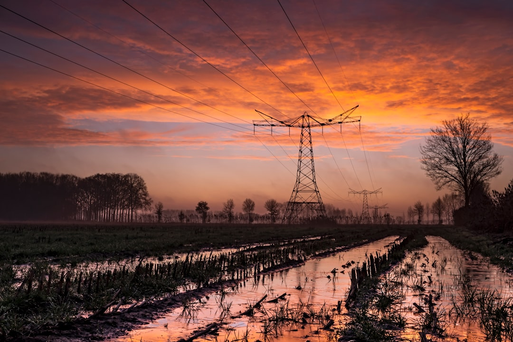

Rise and Shine!
Your energy is at its peak - make it count!
Day Mode • Focus on what fits your energy
Day Energy
High focus • Active goals • Creative work
1/3
Channel your morning energy into meaningful action
Night Calm
Reflection • Preparation • Self-care
1/3
Your daily rhythm is powerful
Morning energy for big moves
Evening calm for reflection